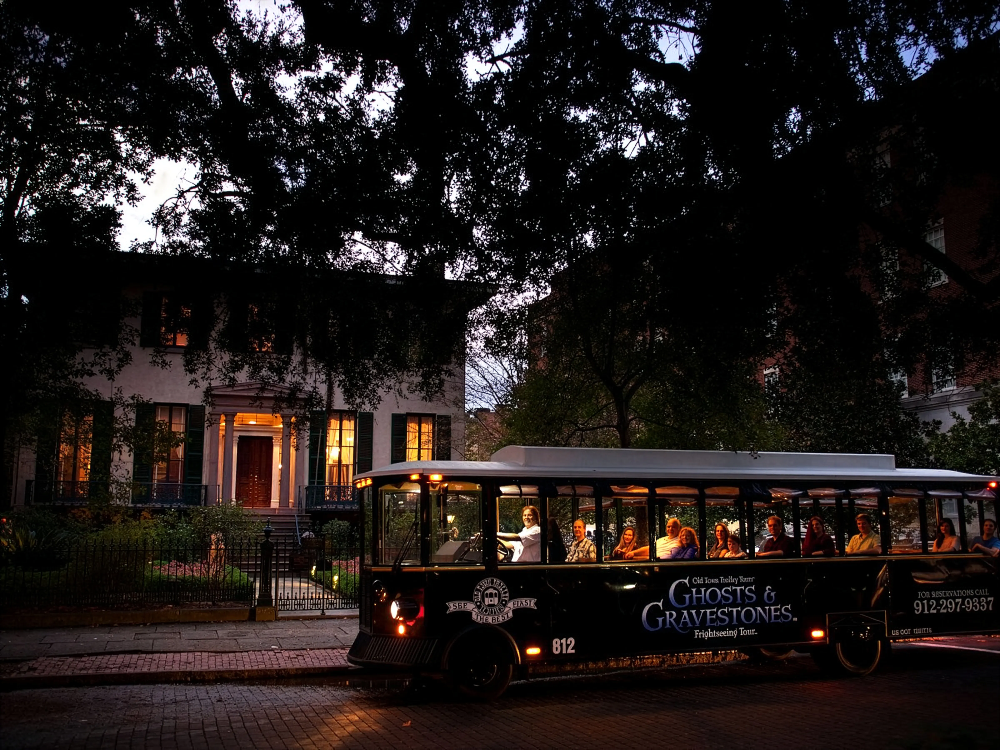
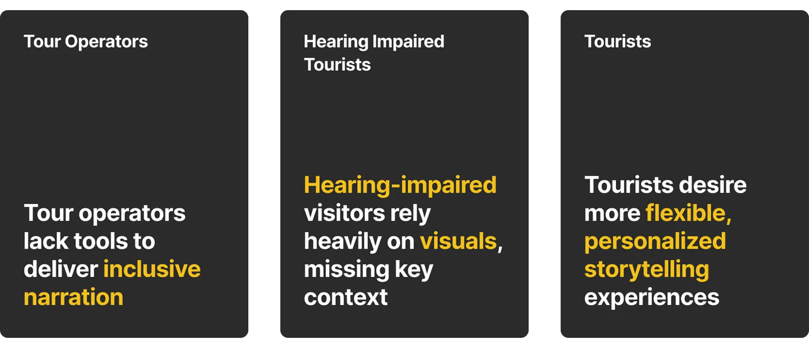
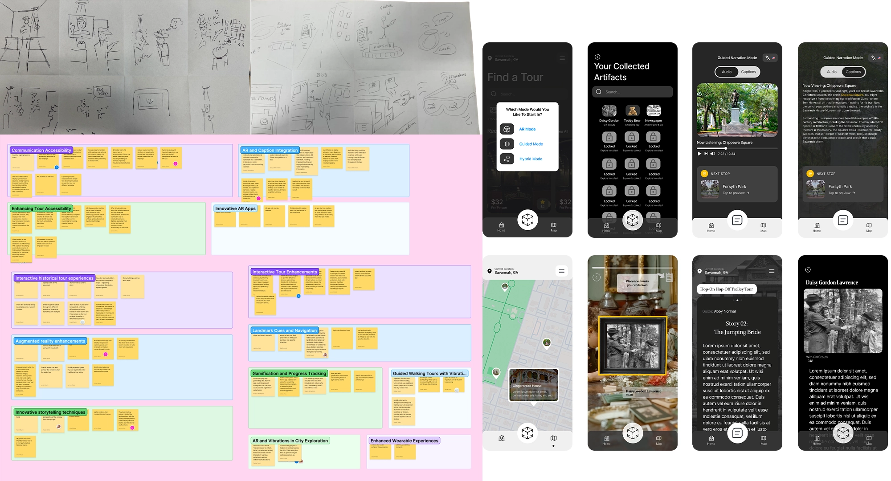

Problem
In a city of stories, history is getting lost in the noise.
A guided tour is an audio product delivered in one of the worst possible environments for audio. Savannah's trolley and walking tours run through live streets (traffic, crowds, construction), and the guide is competing with all of it. The content fails intermittently for everyone, and completely for anyone with a hearing impairment. Operators lose the story they're selling; guests lose the reason they paid.

Research
Understanding the gap between the guide and the guest.
We took to the streets, riding walking and trolley tours ourselves and interviewing both guides and guests. Guides told us they needed to reach younger demographics. Tourists told us something more concrete, and they told us repeatedly:
“People yelling or loud cars or loud bikes… I could see other tourists, they were visibly mad, and they also couldn’t hear as well.”
“It would have been better if I was able to hear everything, or could go back and look at what was said.”
Audibility, not content, was the failure point. And one participant handed us the direction unprompted:
“Hearing challenges would be benefited from AR/VR. The guide could directly talk to a hearing-disabled person.”
“It would be cool to see what the guides are talking about, actually go back into history and see it for yourself.”
Those two together set the brief. The experience had to be inclusive, so everyone receives the story regardless of street noise or hearing ability, and immersive enough that people remember it for years. Not a lack of history. A delivery problem, and an engagement opportunity sitting right next to it.

Solution
A hybrid guided experience.
We kept the human guide and moved the delivery onto the guest's own phone, combining digital narration, captioning, AR and gamification. The first two solve the problem; the second two are why anyone would want to use it.

Sketches to affinity map to screens. The themes on the wall (communication accessibility, AR and caption integration, landmark cues) are what the four solution components came from.
Digital narration
The guide's story is delivered through the guest's own device rather than shouted over traffic. Street noise stops being a variable, and the guest controls their own volume.
Captioning
Every narration is captioned, so the tour works for guests who are deaf or hard of hearing rather than working around them. It also means anyone can go back and read what they missed, the replay request that came up repeatedly in our interviews.
AR storytelling
We integrated AR at key landmarks, like the Mary Tew House, letting buildings transform and historical characters appear in real time. That answers the immersion request directly: seeing what the guide is describing rather than only hearing it.
The Artifact Gallery
To drive exploration, we implemented an "Artifact Gallery." Users unlock badges and collect virtual artifacts as they navigate the city, turning a standard tour into a reward-driven scavenger hunt, and giving guests something to take away, which is what "remember it for years" actually requires.

Impact
What the concept answers, and what it doesn't.
The strongest thing about this project is that the solution came out of the research rather than around it. A participant proposed AR as an answer to hearing challenges before we did, and the delivery model follows directly from what people told us was broken. Captioning and narration through the guest's own device address the failure we actually observed instead of the one we assumed.
This is concept design. It was never built or run on a real tour, so I can't tell you it improved comprehension, attracted younger riders, or sold more tickets. Those are the outcomes we designed toward, not results we measured.
What I'd want to know first: does moving narration onto a phone pull people out of the street they came to look at? Immersion and heads-down screen time are in tension, and a live tour is the setting where that tension is most likely to bite.